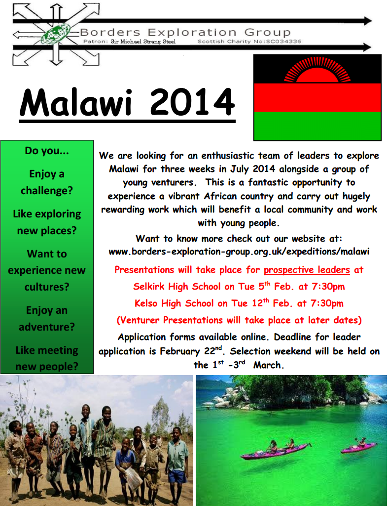

Borders Exploration Group
Patron: Sir Michael Strang Steel Scottish Charity No:SC034336

Malawi 2014
Malawi 2014 Venturers
| Forename(s) | Surname | Area |
| Shona | Fairbairn | Duns |
| Kirsty | Hebdon | Duns |
| Holly | Cunningham | Earlston |
| Hasan Ali | Ahmed | Galashiels |
| Broc | Drury | Galashiels |
| Alexander Glenn | Myburgh | Galashiels |
| Lewis | Whitehead | Galashiels |
| Katie Logan | Anderson | Jedburgh |
| Lauren | Farquharson | Jedburgh |
| Cara | Griffiths | Jedburgh |
| Holly | Mackay | Jedburgh |
| Cameron | Munro | Jedburgh |
| Megan | Smith | Jedburgh |
| Katie | Best | Kelso |
| Euan | Briggs | Kelso |
| Rachael | Fraser | Kelso |
| Robert | Hurren | Kelso |
| Grant | Lees | Kelso |
| Jennie | Robson | Kelso |
| Lauren | Smith | Kelso |
| Kate | Thomson | Kelso |
| Eleanor | Walker | Peebles |
| Maisie | Wilson | Peebles |
| Chloe | Anderson | Selkirk |
| Erin | Highton | Selkirk |
| Kieran | Riddel | Selkirk |
| Hamish | Robertson | Selkirk |
BEG's next exciting international trip is to Malawi. This is planned for three weeks during the summer of July 2014. We are looking for an enthusiastic team of leaders and venturers (venturers must be aged 16–25 at the time of travel) to explore this vibrant country. If you enjoy a challenge and adventure, like exploring new places and meeting new people then this could be a life changing experience for you. This is a fantastic opportunity to experience a dynamic African country and carry out hugely rewarding work.
A typical BEG expedition has 5 stages; community, cultural, social, environmental and adventure. Although in the early stages of planning, exciting opportunities have already arisen for us to help improve school buildings and explore Lake Malawi. Information evenings for both leaders and venturers will be held respectively on:
- Leaders: Selkirk High School on Tue 5th February at 7:30pm
- Leaders: Kelso High School on Tue 12th Feb. at 7:30pm
- Venturers: TBC
For more information, please see the presentation below. Please note deadlines for and applications are as follows:
- Leaders: February 22nd 2013
- Venturers: April 5th 2013
- Leaders: 1st to 3rd March 2013 Please note revised date
- Venturers: TBC
Between us, we have been on four expeditions with BEG, as a venturer and a leader, so please feel free to ask us any questions. Any queries please email malawi2014@borders-exploration-group.org.uk.
Aisha & Catherine
Leader Application Forms
Leader Application Form: Closing Date 22nd February 2013 [Doc / PDF]
Venturer Application Forms
Venturer Application Form: [Doc / PDF]
Venturer Presentation

Download this poster: [Doc / PDF]